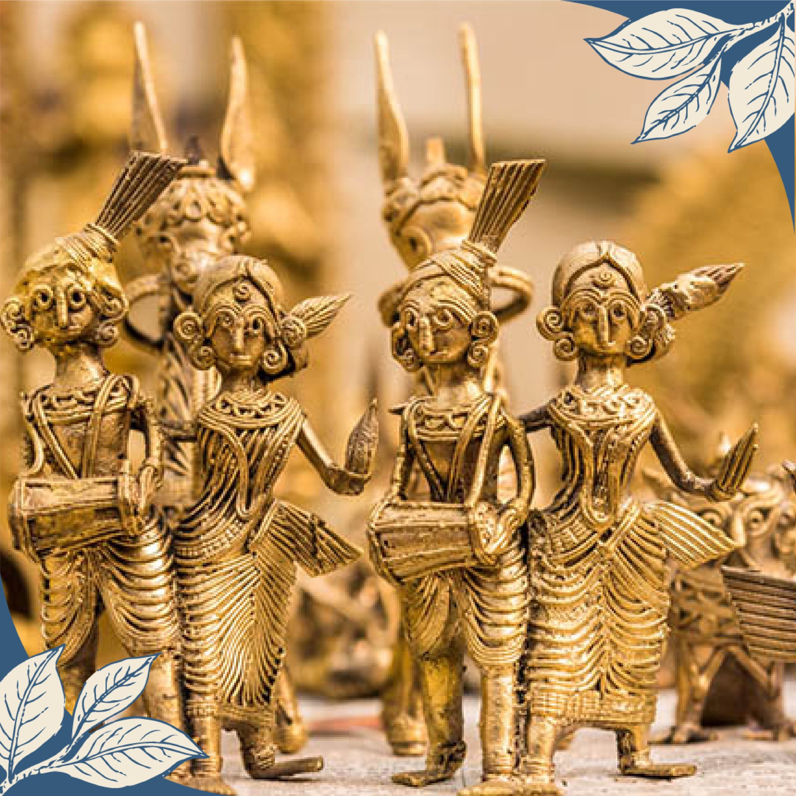

Aadivasi Culture
The tribes of Dantewada are excellent artisans; they specialize in creating artistic objects from clay, stone, bamboo, and metals.
They express their deep talent and knowledge through crafts like wrought iron art, wood art, and other handicrafts, which they make using shells, metals, and peacock feathers. Tribal groups are connected through language and dialect. These groups are socially distinct from castes and have unique traditions, beliefs, and customs.
Bastar Tribal Craft

Bastar Tribal Craft, originating from the Bastar region in Chhattisgarh, India, is renowned for its exquisite craftsmanship and deep cultural significance. The artisans of Bastar, primarily from tribal communities, create a variety of traditional crafts such as Dhokra (bell metal) art, wood carvings, bamboo crafts, and terracotta sculptures.
Bastar Dussehra
Bastar Dussehra, or Jagdalpur Dussehra, is a vibrant celebration in Chhattisgarh. Lasting for 75 days, it's one of the longest festivals globally. Unlike other Dussehra celebrations, it doesn't commemorate Lord Rama's victory over Ravana; instead, it honours the local deity, Goddess Danteshwari Devi.